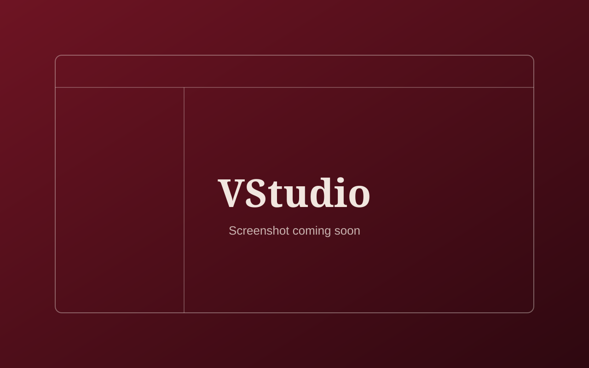

Case study
In progressVStudio
A personal project aiming to bring a polished, user-friendly online compiler and coding environment to the browser.

Problem and motivation
Learning to program means moving between editors, compilers and saved files. VStudio is an attempt to bring that workflow into one clean, friendly workspace in the browser, and a way for me to learn by building something I would actually want to use.
Goals
- Create a polished, user-friendly online coding environment.
- Let people organise their work as projects they can create, save and return to.
- Keep the frontend built with plain HTML, CSS and JavaScript so I understand every part of it.
Worked on so far
- Frontend interface built with HTML, CSS and JavaScript, opened and viewed locally in the browser.
- Project and account-style flows: creating projects, saving projects, recent projects and logout behaviour.
- Frontend testing and debugging, currently the main priority.
These flows are still being tested. I’m not presenting them as finished.
Planned
- Code editor and language selection.
- Run code through a connected compiler backend. Online execution is a goal, and won’t be described as working until it is integrated and tested.
- Full user authentication and account handling.
- AI-assisted coding.
- Saved snippets.
- Coding challenges and progress features.
Tech stack
Screenshots
Screenshots will be added here once the interface is stable enough to show.
Development challenges
Some project persistence and session behaviour needed debugging, particularly around creating and saving projects, listing recent projects, and what happens on logout.
Solutions attempted
I’m approaching these by testing each flow in the browser, reproducing the problem, and working through how state and sessions are handled until the behaviour is predictable.
Current status
In progress: frontend testing and debugging.
Next steps
- Finish debugging project saving, recent projects and session behaviour.
- Add real screenshots and publish the source on GitHub.
- Investigate and test a real compiler backend before making any execution claims.